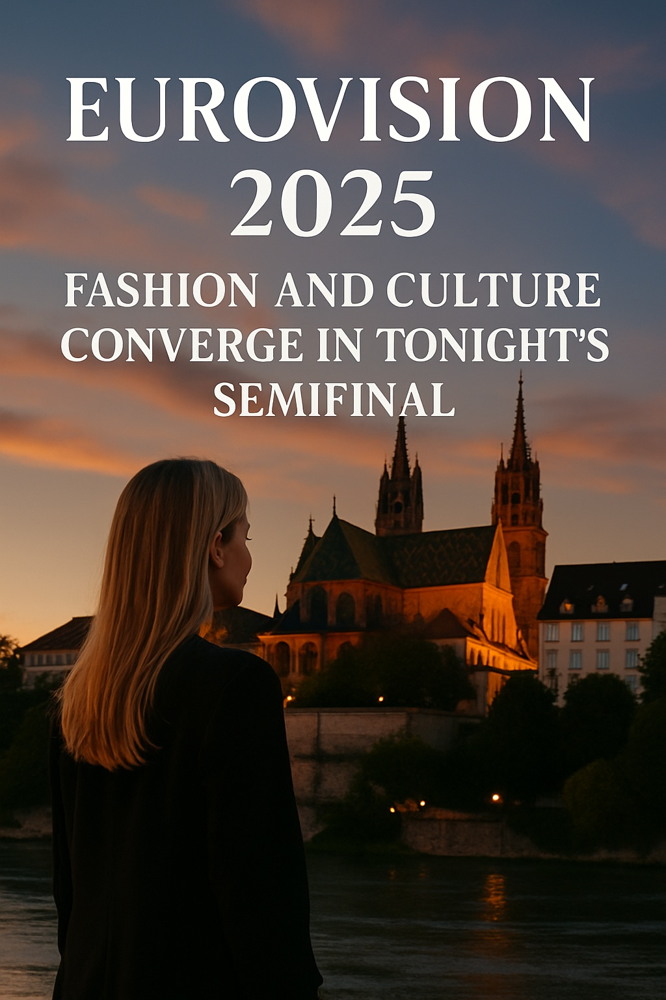

Eurovision 2025: Fashion and Culture Converge in Tonight's Semifinal
Live from Basel, Switzerland, the first Eurovision 2025 semifinal kicks off a week where fashion competes with music for the spotlight.
Today, Tuesday May 13, 2025, marks the first semifinal of Eurovision — Europe’s most extravagant and visually driven musical event. But this year, fashion might just be the real headliner.
With a stage setup worthy of a futuristic couture show, tonight’s 15 performances are pushing the boundaries not only of sound but of style. Designers, stylists, and creative directors have transformed this year’s entries into walking exhibitions of concept fashion.
Sweden’s artist wowed in a responsive LED gown that changed color based on the stage lighting. Greece brought heritage techwear, blending traditional textiles with hypermodern silhouettes. Latvia went fully surreal, donning a jacket shaped like a musical lyre and gravity-defying trousers.
But it was Spanish icon Melody — performing as a guest with her hit “Esa Diva” — who stole the stage in a fire-red structured bodysuit with shimmering stones and a floating cape. Social media lit up with fashion commentary as much as musical praise.
Eurovision has always been more than a song contest. In 2025, it’s solidified its role as a platform for cultural expression, political storytelling, and avant-garde fashion. Many of tonight’s looks were crafted by independent designers, emerging talents, and artisans representing their country’s identity.
Basel, a city better known for its museums than its nightclubs, has transformed into a fashion playground. Streets are filled with fans dressed like editorial models: platform boots, glitter brows, DIY flags-as-capes, and layered neon rule the sidewalks.
The visual concept this year leans vertical — with towering screens, spotlight columns, and a stage built around clean brutalist geometry. Swiss set designer Anton Keller says it was inspired by “architectural rhythm and techno-spiritual contrast.”
Instagram and TikTok are already buzzing with outfit breakdowns, behind-the-scenes looks, and memes. With over 180 million viewers expected for tonight’s broadcast, fashion houses are watching closely: some Eurovision trends often prefigure seasonal shifts in mainstream fashion.
Eurovision 2025 is a reminder that fashion isn’t secondary. It’s narrative. And tonight, every stitch, sequin, and silhouette is part of the performance.
Published: 2025-05-13
← Back to News